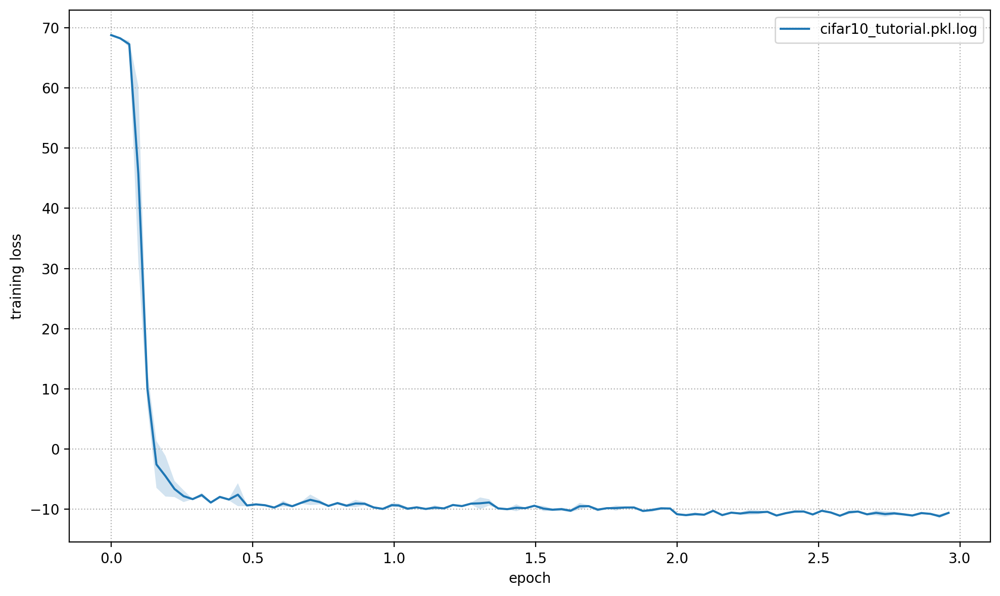
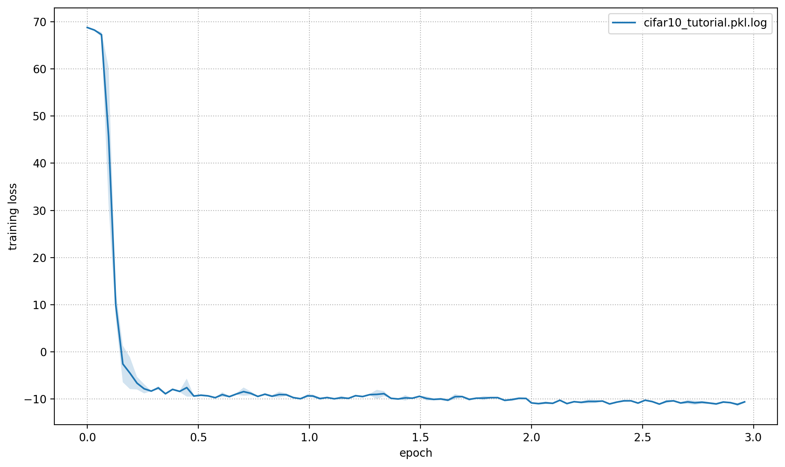

Cifar10#
This page gives a quick introduction to OpenPifPaf’s Cifar10 plugin that is part of openpifpaf.plugins.
It demonstrates the plugin architecture.
There already is a nice dataset for CIFAR10 in torchvision and a related PyTorch tutorial.
The plugin adds a DataModule that uses this dataset.
Let’s start with them setup for this notebook and registering all available OpenPifPaf plugins:
print(openpifpaf.plugin.REGISTERED.keys())
dict_keys(['openpifpaf.plugins.animalpose', 'openpifpaf.plugins.apollocar3d', 'openpifpaf.plugins.cifar10', 'openpifpaf.plugins.coco', 'openpifpaf.plugins.crowdpose', 'openpifpaf.plugins.nuscenes', 'openpifpaf.plugins.posetrack', 'openpifpaf.plugins.wholebody', 'openpifpaf_extras'])
Next, we configure and instantiate the Cifar10 datamodule and look at the configured head metas:
# configure
openpifpaf.plugins.cifar10.datamodule.Cifar10.debug = True
openpifpaf.plugins.cifar10.datamodule.Cifar10.batch_size = 1
# instantiate and inspect
datamodule = openpifpaf.plugins.cifar10.datamodule.Cifar10()
datamodule.set_loader_workers(0) # no multi-processing to see debug outputs in main thread
datamodule.head_metas
[CifDet(name='cifdet', dataset='cifar10', head_index=None, base_stride=None, upsample_stride=1, categories=('plane', 'car', 'bird', 'cat', 'deer', 'dog', 'frog', 'horse', 'ship', 'truck'), training_weights=None)]
We see here that CIFAR10 is being treated as a detection dataset (CifDet) and has 10 categories.
To create a network, we use the factory() function that takes the name of the base network cifar10net and the list of head metas.
net = openpifpaf.network.Factory(base_name='cifar10net').factory(head_metas=datamodule.head_metas)
We can inspect the training data that is returned from datamodule.train_loader():
# configure visualization
openpifpaf.visualizer.Base.set_all_indices(['cifdet:9:regression']) # category 9 = truck
# Create a wrapper for a data loader that iterates over a set of matplotlib axes.
# The only purpose is to set a different matplotlib axis before each call to
# retrieve the next image from the data_loader so that it produces multiple
# debug images in one canvas side-by-side.
def loop_over_axes(axes, data_loader):
previous_common_ax = openpifpaf.visualizer.Base.common_ax
train_loader_iter = iter(data_loader)
for ax in axes.reshape(-1):
openpifpaf.visualizer.Base.common_ax = ax
yield next(train_loader_iter, None)
openpifpaf.visualizer.Base.common_ax = previous_common_ax
# create a canvas and loop over the first few entries in the training data
with openpifpaf.show.canvas(ncols=6, nrows=3, figsize=(10, 5)) as axs:
for images, targets, meta in loop_over_axes(axs, datamodule.train_loader()):
pass
Training#
We train a very small network, cifar10net, for only one epoch. Afterwards, we will investigate its predictions.
%%bash
python -m openpifpaf.train \
--dataset=cifar10 --basenet=cifar10net --log-interval=50 \
--epochs=3 --lr=0.0003 --momentum=0.95 --batch-size=16 \
--lr-warm-up-epochs=0.1 --lr-decay 2.0 2.5 --lr-decay-epochs=0.1 \
--loader-workers=2 --output=cifar10_tutorial.pkl
INFO:__main__:neural network device: cpu (CUDA available: False, count: 0)
INFO:openpifpaf.network.basenetworks:cifar10net: stride = 16, output features = 128
INFO:openpifpaf.network.losses.multi_head:multihead loss: ['cifar10.cifdet.c', 'cifar10.cifdet.vec'], [1.0, 1.0]
INFO:openpifpaf.logger:{'type': 'process', 'argv': ['/opt/hostedtoolcache/Python/3.8.18/x64/lib/python3.8/site-packages/openpifpaf/train.py', '--dataset=cifar10', '--basenet=cifar10net', '--log-interval=50', '--epochs=3', '--lr=0.0003', '--momentum=0.95', '--batch-size=16', '--lr-warm-up-epochs=0.1', '--lr-decay', '2.0', '2.5', '--lr-decay-epochs=0.1', '--loader-workers=2', '--output=cifar10_tutorial.pkl'], 'args': {'output': 'cifar10_tutorial.pkl', 'disable_cuda': False, 'ddp': False, 'local_rank': None, 'sync_batchnorm': True, 'quiet': False, 'debug': False, 'log_stats': False, 'mobilenetv3_pretrained': True, 'swin_drop_path_rate': 0.2, 'swin_input_upsample': False, 'swin_use_fpn': False, 'swin_fpn_out_channels': None, 'swin_fpn_level': 3, 'swin_pretrained': True, 'xcit_out_channels': None, 'xcit_out_maxpool': False, 'xcit_pretrained': True, 'shufflenetv2_pretrained': True, 'shufflenetv2k_input_conv2_stride': 0, 'shufflenetv2k_input_conv2_outchannels': None, 'shufflenetv2k_stage4_dilation': 1, 'shufflenetv2k_kernel': 5, 'shufflenetv2k_conv5_as_stage': False, 'shufflenetv2k_instance_norm': False, 'shufflenetv2k_group_norm': False, 'shufflenetv2k_leaky_relu': False, 'mobilenetv2_pretrained': True, 'resnet_pretrained': True, 'resnet_pool0_stride': 0, 'resnet_input_conv_stride': 2, 'resnet_input_conv2_stride': 0, 'resnet_block5_dilation': 1, 'resnet_remove_last_block': False, 'cf4_dropout': 0.0, 'cf4_inplace_ops': True, 'checkpoint': None, 'basenet': 'cifar10net', 'cross_talk': 0.0, 'download_progress': True, 'head_consolidation': 'filter_and_extend', 'lambdas': None, 'component_lambdas': None, 'auto_tune_mtl': False, 'auto_tune_mtl_variance': False, 'task_sparsity_weight': 0.0, 'b_scale': 1.0, 'scale_log': False, 'scale_soft_clamp': 5.0, 'regression_soft_clamp': 5.0, 'focal_alpha': 0.5, 'focal_gamma': 1.0, 'bce_soft_clamp': 5.0, 'bce_background_clamp': -15.0, 'epochs': 3, 'train_batches': None, 'val_batches': None, 'clip_grad_norm': 0.0, 'clip_grad_value': 0.0, 'log_interval': 50, 'val_interval': 1, 'stride_apply': 1, 'fix_batch_norm': False, 'ema': 0.01, 'profile': None, 'cif_side_length': 4, 'caf_min_size': 3, 'caf_fixed_size': False, 'caf_aspect_ratio': 0.0, 'encoder_suppress_selfhidden': True, 'encoder_suppress_invisible': False, 'encoder_suppress_collision': False, 'momentum': 0.95, 'beta2': 0.999, 'adam_eps': 1e-06, 'nesterov': True, 'weight_decay': 0.0, 'adam': False, 'amsgrad': False, 'lr': 0.0003, 'lr_decay': [2.0, 2.5], 'lr_decay_factor': 0.1, 'lr_decay_epochs': 0.1, 'lr_warm_up_start_epoch': 0, 'lr_warm_up_epochs': 0.1, 'lr_warm_up_factor': 0.001, 'lr_warm_restarts': [], 'lr_warm_restart_duration': 0.5, 'dataset': 'cifar10', 'loader_workers': 2, 'batch_size': 16, 'dataset_weights': None, 'animal_train_annotations': 'data-animalpose/annotations/animal_keypoints_20_train.json', 'animal_val_annotations': 'data-animalpose/annotations/animal_keypoints_20_val.json', 'animal_train_image_dir': 'data-animalpose/images/train/', 'animal_val_image_dir': 'data-animalpose/images/val/', 'animal_square_edge': 513, 'animal_extended_scale': False, 'animal_orientation_invariant': 0.0, 'animal_blur': 0.0, 'animal_augmentation': True, 'animal_rescale_images': 1.0, 'animal_upsample': 1, 'animal_min_kp_anns': 1, 'animal_bmin': 1, 'animal_eval_test2017': False, 'animal_eval_testdev2017': False, 'animal_eval_annotation_filter': True, 'animal_eval_long_edge': 0, 'animal_eval_extended_scale': False, 'animal_eval_orientation_invariant': 0.0, 'apollo_train_annotations': 'data-apollocar3d/annotations/apollo_keypoints_66_train.json', 'apollo_val_annotations': 'data-apollocar3d/annotations/apollo_keypoints_66_val.json', 'apollo_train_image_dir': 'data-apollocar3d/images/train/', 'apollo_val_image_dir': 'data-apollocar3d/images/val/', 'apollo_square_edge': 513, 'apollo_extended_scale': False, 'apollo_orientation_invariant': 0.0, 'apollo_blur': 0.0, 'apollo_augmentation': True, 'apollo_rescale_images': 1.0, 'apollo_upsample': 1, 'apollo_min_kp_anns': 1, 'apollo_bmin': 1, 'apollo_apply_local_centrality': False, 'apollo_eval_annotation_filter': True, 'apollo_eval_long_edge': 0, 'apollo_eval_extended_scale': False, 'apollo_eval_orientation_invariant': 0.0, 'apollo_use_24_kps': False, 'cifar10_root_dir': 'data-cifar10/', 'cifar10_download': False, 'cocodet_train_annotations': 'data-mscoco/annotations/instances_train2017.json', 'cocodet_val_annotations': 'data-mscoco/annotations/instances_val2017.json', 'cocodet_train_image_dir': 'data-mscoco/images/train2017/', 'cocodet_val_image_dir': 'data-mscoco/images/val2017/', 'cocodet_square_edge': 513, 'cocodet_extended_scale': False, 'cocodet_orientation_invariant': 0.0, 'cocodet_blur': 0.0, 'cocodet_augmentation': True, 'cocodet_rescale_images': 1.0, 'cocodet_upsample': 1, 'cocokp_train_annotations': 'data-mscoco/annotations/person_keypoints_train2017.json', 'cocokp_val_annotations': 'data-mscoco/annotations/person_keypoints_val2017.json', 'cocokp_train_image_dir': 'data-mscoco/images/train2017/', 'cocokp_val_image_dir': 'data-mscoco/images/val2017/', 'cocokp_square_edge': 385, 'cocokp_with_dense': False, 'cocokp_extended_scale': False, 'cocokp_orientation_invariant': 0.0, 'cocokp_blur': 0.0, 'cocokp_augmentation': True, 'cocokp_rescale_images': 1.0, 'cocokp_upsample': 1, 'cocokp_min_kp_anns': 1, 'cocokp_bmin': 0.1, 'cocokp_eval_test2017': False, 'cocokp_eval_testdev2017': False, 'coco_eval_annotation_filter': True, 'coco_eval_long_edge': 641, 'coco_eval_extended_scale': False, 'coco_eval_orientation_invariant': 0.0, 'crowdpose_train_annotations': 'data-crowdpose/json/crowdpose_train.json', 'crowdpose_val_annotations': 'data-crowdpose/json/crowdpose_val.json', 'crowdpose_image_dir': 'data-crowdpose/images/', 'crowdpose_square_edge': 385, 'crowdpose_extended_scale': False, 'crowdpose_orientation_invariant': 0.0, 'crowdpose_augmentation': True, 'crowdpose_rescale_images': 1.0, 'crowdpose_upsample': 1, 'crowdpose_min_kp_anns': 1, 'crowdpose_eval_test': False, 'crowdpose_eval_long_edge': 641, 'crowdpose_eval_extended_scale': False, 'crowdpose_eval_orientation_invariant': 0.0, 'crowdpose_index': None, 'nuscenes_train_annotations': '../../../NuScenes/mscoco_style_annotations/nuimages_v1.0-train.json', 'nuscenes_val_annotations': '../../../NuScenes/mscoco_style_annotations/nuimages_v1.0-val.json', 'nuscenes_train_image_dir': '../../../NuScenes/nuimages-v1.0-all-samples', 'nuscenes_val_image_dir': '../../../NuScenes/nuimages-v1.0-all-samples', 'nuscenes_square_edge': 513, 'nuscenes_extended_scale': False, 'nuscenes_orientation_invariant': 0.0, 'nuscenes_blur': 0.0, 'nuscenes_augmentation': True, 'nuscenes_rescale_images': 1.0, 'nuscenes_upsample': 1, 'posetrack2018_train_annotations': 'data-posetrack2018/annotations/train/*.json', 'posetrack2018_val_annotations': 'data-posetrack2018/annotations/val/*.json', 'posetrack2018_eval_annotations': 'data-posetrack2018/annotations/val/*.json', 'posetrack2018_data_root': 'data-posetrack2018', 'posetrack_square_edge': 385, 'posetrack_with_dense': False, 'posetrack_augmentation': True, 'posetrack_rescale_images': 1.0, 'posetrack_upsample': 1, 'posetrack_min_kp_anns': 1, 'posetrack_bmin': 0.1, 'posetrack_sample_pairing': 0.0, 'posetrack_image_augmentations': 0.0, 'posetrack_max_shift': 30.0, 'posetrack_eval_long_edge': 801, 'posetrack_eval_extended_scale': False, 'posetrack_eval_orientation_invariant': 0.0, 'posetrack_ablation_without_tcaf': False, 'posetrack2017_eval_annotations': 'data-posetrack2017/annotations/val/*.json', 'posetrack2017_data_root': 'data-posetrack2017', 'cocokpst_max_shift': 30.0, 'wholebody_train_annotations': 'data-mscoco/annotations/person_keypoints_train2017_wholebody_pifpaf_style.json', 'wholebody_val_annotations': 'data-mscoco/annotations/coco_wholebody_val_v1.0.json', 'wholebody_train_image_dir': 'data-mscoco/images/train2017/', 'wholebody_val_image_dir': 'data-mscoco/images/val2017', 'wholebody_square_edge': 385, 'wholebody_extended_scale': False, 'wholebody_orientation_invariant': 0.0, 'wholebody_blur': 0.0, 'wholebody_augmentation': True, 'wholebody_rescale_images': 1.0, 'wholebody_upsample': 1, 'wholebody_min_kp_anns': 1, 'wholebody_bmin': 1.0, 'wholebody_apply_local_centrality': False, 'wholebody_eval_test2017': False, 'wholebody_eval_testdev2017': False, 'wholebody_eval_annotation_filter': True, 'wholebody_eval_long_edge': 641, 'wholebody_eval_extended_scale': False, 'wholebody_eval_orientation_invariant': 0.0, 'save_all': None, 'show': False, 'image_width': None, 'image_height': None, 'image_dpi_factor': 2.0, 'image_min_dpi': 50.0, 'show_file_extension': 'jpeg', 'textbox_alpha': 0.5, 'text_color': 'white', 'font_size': 8, 'monocolor_connections': False, 'line_width': None, 'skeleton_solid_threshold': 0.5, 'show_box': False, 'white_overlay': False, 'show_joint_scales': False, 'show_joint_confidences': False, 'show_decoding_order': False, 'show_frontier_order': False, 'show_only_decoded_connections': False, 'video_fps': 10, 'video_dpi': 100, 'debug_indices': [], 'device': device(type='cpu'), 'pin_memory': False}, 'version': '0.13.11+8.gd192643', 'plugin_versions': {'openpifpaf_extras': '0.0.3'}, 'hostname': 'fv-az1426-279'}
INFO:openpifpaf.optimize:SGD optimizer
INFO:openpifpaf.optimize:training batches per epoch = 3125
INFO:openpifpaf.network.trainer:{'type': 'config', 'field_names': ['cifar10.cifdet.c', 'cifar10.cifdet.vec']}
INFO:openpifpaf.network.trainer:model written: cifar10_tutorial.pkl.epoch000
INFO:openpifpaf.network.trainer:{'type': 'train', 'epoch': 0, 'batch': 0, 'n_batches': 3125, 'time': 0.021, 'data_time': 0.157, 'lr': 3e-07, 'loss': 68.65, 'head_losses': [1.878, 66.773]}
INFO:openpifpaf.network.trainer:{'type': 'train', 'epoch': 0, 'batch': 50, 'n_batches': 3125, 'time': 0.01, 'data_time': 0.001, 'lr': 9.1e-07, 'loss': 68.922, 'head_losses': [1.755, 67.167]}
INFO:openpifpaf.network.trainer:{'type': 'train', 'epoch': 0, 'batch': 100, 'n_batches': 3125, 'time': 0.008, 'data_time': 0.002, 'lr': 2.74e-06, 'loss': 68.219, 'head_losses': [1.935, 66.284]}
INFO:openpifpaf.network.trainer:{'type': 'train', 'epoch': 0, 'batch': 150, 'n_batches': 3125, 'time': 0.01, 'data_time': 0.001, 'lr': 8.26e-06, 'loss': 68.274, 'head_losses': [1.894, 66.38]}
INFO:openpifpaf.network.trainer:{'type': 'train', 'epoch': 0, 'batch': 200, 'n_batches': 3125, 'time': 0.01, 'data_time': 0.001, 'lr': 2.495e-05, 'loss': 67.819, 'head_losses': [1.945, 65.874]}
INFO:openpifpaf.network.trainer:{'type': 'train', 'epoch': 0, 'batch': 250, 'n_batches': 3125, 'time': 0.01, 'data_time': 0.003, 'lr': 7.536e-05, 'loss': 66.715, 'head_losses': [1.955, 64.76]}
INFO:openpifpaf.network.trainer:{'type': 'train', 'epoch': 0, 'batch': 300, 'n_batches': 3125, 'time': 0.01, 'data_time': 0.005, 'lr': 0.00022757, 'loss': 60.336, 'head_losses': [3.834, 56.502]}
INFO:openpifpaf.network.trainer:{'type': 'train', 'epoch': 0, 'batch': 350, 'n_batches': 3125, 'time': 0.009, 'data_time': 0.002, 'lr': 0.0003, 'loss': 31.079, 'head_losses': [-0.359, 31.438]}
INFO:openpifpaf.network.trainer:{'type': 'train', 'epoch': 0, 'batch': 400, 'n_batches': 3125, 'time': 0.008, 'data_time': 0.002, 'lr': 0.0003, 'loss': 12.922, 'head_losses': [-6.203, 19.125]}
INFO:openpifpaf.network.trainer:{'type': 'train', 'epoch': 0, 'batch': 450, 'n_batches': 3125, 'time': 0.009, 'data_time': 0.002, 'lr': 0.0003, 'loss': 7.182, 'head_losses': [-8.111, 15.293]}
INFO:openpifpaf.network.trainer:{'type': 'train', 'epoch': 0, 'batch': 500, 'n_batches': 3125, 'time': 0.009, 'data_time': 0.002, 'lr': 0.0003, 'loss': 1.322, 'head_losses': [-8.578, 9.9]}
INFO:openpifpaf.network.trainer:{'type': 'train', 'epoch': 0, 'batch': 550, 'n_batches': 3125, 'time': 0.008, 'data_time': 0.002, 'lr': 0.0003, 'loss': -6.447, 'head_losses': [-8.793, 2.346]}
INFO:openpifpaf.network.trainer:{'type': 'train', 'epoch': 0, 'batch': 600, 'n_batches': 3125, 'time': 0.008, 'data_time': 0.002, 'lr': 0.0003, 'loss': -1.128, 'head_losses': [-8.917, 7.789]}
INFO:openpifpaf.network.trainer:{'type': 'train', 'epoch': 0, 'batch': 650, 'n_batches': 3125, 'time': 0.008, 'data_time': 0.002, 'lr': 0.0003, 'loss': -7.894, 'head_losses': [-8.969, 1.076]}
INFO:openpifpaf.network.trainer:{'type': 'train', 'epoch': 0, 'batch': 700, 'n_batches': 3125, 'time': 0.009, 'data_time': 0.002, 'lr': 0.0003, 'loss': -7.987, 'head_losses': [-9.116, 1.129]}
INFO:openpifpaf.network.trainer:{'type': 'train', 'epoch': 0, 'batch': 750, 'n_batches': 3125, 'time': 0.008, 'data_time': 0.002, 'lr': 0.0003, 'loss': -5.304, 'head_losses': [-8.982, 3.678]}
INFO:openpifpaf.network.trainer:{'type': 'train', 'epoch': 0, 'batch': 800, 'n_batches': 3125, 'time': 0.009, 'data_time': 0.002, 'lr': 0.0003, 'loss': -8.817, 'head_losses': [-9.211, 0.394]}
INFO:openpifpaf.network.trainer:{'type': 'train', 'epoch': 0, 'batch': 850, 'n_batches': 3125, 'time': 0.009, 'data_time': 0.002, 'lr': 0.0003, 'loss': -6.843, 'head_losses': [-9.018, 2.175]}
INFO:openpifpaf.network.trainer:{'type': 'train', 'epoch': 0, 'batch': 900, 'n_batches': 3125, 'time': 0.008, 'data_time': 0.002, 'lr': 0.0003, 'loss': -8.298, 'head_losses': [-8.937, 0.639]}
INFO:openpifpaf.network.trainer:{'type': 'train', 'epoch': 0, 'batch': 950, 'n_batches': 3125, 'time': 0.009, 'data_time': 0.002, 'lr': 0.0003, 'loss': -8.351, 'head_losses': [-9.229, 0.878]}
INFO:openpifpaf.network.trainer:{'type': 'train', 'epoch': 0, 'batch': 1000, 'n_batches': 3125, 'time': 0.008, 'data_time': 0.002, 'lr': 0.0003, 'loss': -8.001, 'head_losses': [-9.244, 1.243]}
INFO:openpifpaf.network.trainer:{'type': 'train', 'epoch': 0, 'batch': 1050, 'n_batches': 3125, 'time': 0.006, 'data_time': 0.001, 'lr': 0.0003, 'loss': -7.292, 'head_losses': [-9.383, 2.092]}
INFO:openpifpaf.network.trainer:{'type': 'train', 'epoch': 0, 'batch': 1100, 'n_batches': 3125, 'time': 0.008, 'data_time': 0.002, 'lr': 0.0003, 'loss': -9.09, 'head_losses': [-9.255, 0.165]}
INFO:openpifpaf.network.trainer:{'type': 'train', 'epoch': 0, 'batch': 1150, 'n_batches': 3125, 'time': 0.01, 'data_time': 0.001, 'lr': 0.0003, 'loss': -8.699, 'head_losses': [-9.427, 0.728]}
INFO:openpifpaf.network.trainer:{'type': 'train', 'epoch': 0, 'batch': 1200, 'n_batches': 3125, 'time': 0.008, 'data_time': 0.002, 'lr': 0.0003, 'loss': -7.763, 'head_losses': [-9.337, 1.573]}
INFO:openpifpaf.network.trainer:{'type': 'train', 'epoch': 0, 'batch': 1250, 'n_batches': 3125, 'time': 0.011, 'data_time': 0.003, 'lr': 0.0003, 'loss': -8.158, 'head_losses': [-9.49, 1.332]}
INFO:openpifpaf.network.trainer:{'type': 'train', 'epoch': 0, 'batch': 1300, 'n_batches': 3125, 'time': 0.011, 'data_time': 0.002, 'lr': 0.0003, 'loss': -8.248, 'head_losses': [-9.26, 1.011]}
INFO:openpifpaf.network.trainer:{'type': 'train', 'epoch': 0, 'batch': 1350, 'n_batches': 3125, 'time': 0.008, 'data_time': 0.002, 'lr': 0.0003, 'loss': -8.535, 'head_losses': [-9.409, 0.874]}
INFO:openpifpaf.network.trainer:{'type': 'train', 'epoch': 0, 'batch': 1400, 'n_batches': 3125, 'time': 0.008, 'data_time': 0.002, 'lr': 0.0003, 'loss': -9.497, 'head_losses': [-9.493, -0.004]}
INFO:openpifpaf.network.trainer:{'type': 'train', 'epoch': 0, 'batch': 1450, 'n_batches': 3125, 'time': 0.01, 'data_time': 0.002, 'lr': 0.0003, 'loss': -5.678, 'head_losses': [-9.203, 3.525]}
INFO:openpifpaf.network.trainer:{'type': 'train', 'epoch': 0, 'batch': 1500, 'n_batches': 3125, 'time': 0.01, 'data_time': 0.001, 'lr': 0.0003, 'loss': -9.259, 'head_losses': [-9.227, -0.032]}
INFO:openpifpaf.network.trainer:{'type': 'train', 'epoch': 0, 'batch': 1550, 'n_batches': 3125, 'time': 0.01, 'data_time': 0.001, 'lr': 0.0003, 'loss': -9.499, 'head_losses': [-9.397, -0.102]}
INFO:openpifpaf.network.trainer:{'type': 'train', 'epoch': 0, 'batch': 1600, 'n_batches': 3125, 'time': 0.008, 'data_time': 0.002, 'lr': 0.0003, 'loss': -9.385, 'head_losses': [-9.53, 0.145]}
INFO:openpifpaf.network.trainer:{'type': 'train', 'epoch': 0, 'batch': 1650, 'n_batches': 3125, 'time': 0.01, 'data_time': 0.004, 'lr': 0.0003, 'loss': -9.015, 'head_losses': [-9.319, 0.304]}
INFO:openpifpaf.network.trainer:{'type': 'train', 'epoch': 0, 'batch': 1700, 'n_batches': 3125, 'time': 0.008, 'data_time': 0.002, 'lr': 0.0003, 'loss': -9.212, 'head_losses': [-9.457, 0.245]}
INFO:openpifpaf.network.trainer:{'type': 'train', 'epoch': 0, 'batch': 1750, 'n_batches': 3125, 'time': 0.008, 'data_time': 0.001, 'lr': 0.0003, 'loss': -9.473, 'head_losses': [-9.424, -0.049]}
INFO:openpifpaf.network.trainer:{'type': 'train', 'epoch': 0, 'batch': 1800, 'n_batches': 3125, 'time': 0.008, 'data_time': 0.002, 'lr': 0.0003, 'loss': -9.697, 'head_losses': [-9.666, -0.031]}
INFO:openpifpaf.network.trainer:{'type': 'train', 'epoch': 0, 'batch': 1850, 'n_batches': 3125, 'time': 0.011, 'data_time': 0.001, 'lr': 0.0003, 'loss': -9.754, 'head_losses': [-9.642, -0.112]}
INFO:openpifpaf.network.trainer:{'type': 'train', 'epoch': 0, 'batch': 1900, 'n_batches': 3125, 'time': 0.01, 'data_time': 0.001, 'lr': 0.0003, 'loss': -9.574, 'head_losses': [-9.462, -0.112]}
INFO:openpifpaf.network.trainer:{'type': 'train', 'epoch': 0, 'batch': 1950, 'n_batches': 3125, 'time': 0.008, 'data_time': 0.002, 'lr': 0.0003, 'loss': -8.564, 'head_losses': [-9.267, 0.704]}
INFO:openpifpaf.network.trainer:{'type': 'train', 'epoch': 0, 'batch': 2000, 'n_batches': 3125, 'time': 0.008, 'data_time': 0.002, 'lr': 0.0003, 'loss': -9.38, 'head_losses': [-9.267, -0.112]}
INFO:openpifpaf.network.trainer:{'type': 'train', 'epoch': 0, 'batch': 2050, 'n_batches': 3125, 'time': 0.01, 'data_time': 0.002, 'lr': 0.0003, 'loss': -9.628, 'head_losses': [-9.584, -0.044]}
INFO:openpifpaf.network.trainer:{'type': 'train', 'epoch': 0, 'batch': 2100, 'n_batches': 3125, 'time': 0.01, 'data_time': 0.001, 'lr': 0.0003, 'loss': -8.748, 'head_losses': [-9.411, 0.663]}
INFO:openpifpaf.network.trainer:{'type': 'train', 'epoch': 0, 'batch': 2150, 'n_batches': 3125, 'time': 0.01, 'data_time': 0.001, 'lr': 0.0003, 'loss': -9.118, 'head_losses': [-9.262, 0.144]}
INFO:openpifpaf.network.trainer:{'type': 'train', 'epoch': 0, 'batch': 2200, 'n_batches': 3125, 'time': 0.008, 'data_time': 0.002, 'lr': 0.0003, 'loss': -9.313, 'head_losses': [-9.522, 0.209]}
INFO:openpifpaf.network.trainer:{'type': 'train', 'epoch': 0, 'batch': 2250, 'n_batches': 3125, 'time': 0.008, 'data_time': 0.002, 'lr': 0.0003, 'loss': -7.565, 'head_losses': [-9.531, 1.966]}
INFO:openpifpaf.network.trainer:{'type': 'train', 'epoch': 0, 'batch': 2300, 'n_batches': 3125, 'time': 0.008, 'data_time': 0.002, 'lr': 0.0003, 'loss': -9.207, 'head_losses': [-9.366, 0.159]}
INFO:openpifpaf.network.trainer:{'type': 'train', 'epoch': 0, 'batch': 2350, 'n_batches': 3125, 'time': 0.011, 'data_time': 0.002, 'lr': 0.0003, 'loss': -8.394, 'head_losses': [-9.389, 0.995]}
INFO:openpifpaf.network.trainer:{'type': 'train', 'epoch': 0, 'batch': 2400, 'n_batches': 3125, 'time': 0.008, 'data_time': 0.002, 'lr': 0.0003, 'loss': -9.49, 'head_losses': [-9.721, 0.23]}
INFO:openpifpaf.network.trainer:{'type': 'train', 'epoch': 0, 'batch': 2450, 'n_batches': 3125, 'time': 0.01, 'data_time': 0.001, 'lr': 0.0003, 'loss': -9.423, 'head_losses': [-9.885, 0.461]}
INFO:openpifpaf.network.trainer:{'type': 'train', 'epoch': 0, 'batch': 2500, 'n_batches': 3125, 'time': 0.009, 'data_time': 0.002, 'lr': 0.0003, 'loss': -8.768, 'head_losses': [-9.485, 0.716]}
INFO:openpifpaf.network.trainer:{'type': 'train', 'epoch': 0, 'batch': 2550, 'n_batches': 3125, 'time': 0.01, 'data_time': 0.001, 'lr': 0.0003, 'loss': -9.206, 'head_losses': [-9.646, 0.44]}
INFO:openpifpaf.network.trainer:{'type': 'train', 'epoch': 0, 'batch': 2600, 'n_batches': 3125, 'time': 0.009, 'data_time': 0.002, 'lr': 0.0003, 'loss': -9.633, 'head_losses': [-9.712, 0.079]}
INFO:openpifpaf.network.trainer:{'type': 'train', 'epoch': 0, 'batch': 2650, 'n_batches': 3125, 'time': 0.008, 'data_time': 0.002, 'lr': 0.0003, 'loss': -9.198, 'head_losses': [-9.49, 0.292]}
INFO:openpifpaf.network.trainer:{'type': 'train', 'epoch': 0, 'batch': 2700, 'n_batches': 3125, 'time': 0.008, 'data_time': 0.002, 'lr': 0.0003, 'loss': -8.441, 'head_losses': [-9.244, 0.802]}
INFO:openpifpaf.network.trainer:{'type': 'train', 'epoch': 0, 'batch': 2750, 'n_batches': 3125, 'time': 0.008, 'data_time': 0.002, 'lr': 0.0003, 'loss': -9.663, 'head_losses': [-9.887, 0.224]}
INFO:openpifpaf.network.trainer:{'type': 'train', 'epoch': 0, 'batch': 2800, 'n_batches': 3125, 'time': 0.008, 'data_time': 0.002, 'lr': 0.0003, 'loss': -8.822, 'head_losses': [-9.759, 0.936]}
INFO:openpifpaf.network.trainer:{'type': 'train', 'epoch': 0, 'batch': 2850, 'n_batches': 3125, 'time': 0.009, 'data_time': 0.002, 'lr': 0.0003, 'loss': -9.367, 'head_losses': [-9.986, 0.618]}
INFO:openpifpaf.network.trainer:{'type': 'train', 'epoch': 0, 'batch': 2900, 'n_batches': 3125, 'time': 0.008, 'data_time': 0.004, 'lr': 0.0003, 'loss': -9.552, 'head_losses': [-9.99, 0.439]}
INFO:openpifpaf.network.trainer:{'type': 'train', 'epoch': 0, 'batch': 2950, 'n_batches': 3125, 'time': 0.008, 'data_time': 0.002, 'lr': 0.0003, 'loss': -9.858, 'head_losses': [-9.819, -0.039]}
INFO:openpifpaf.network.trainer:{'type': 'train', 'epoch': 0, 'batch': 3000, 'n_batches': 3125, 'time': 0.008, 'data_time': 0.002, 'lr': 0.0003, 'loss': -9.809, 'head_losses': [-9.948, 0.139]}
INFO:openpifpaf.network.trainer:{'type': 'train', 'epoch': 0, 'batch': 3050, 'n_batches': 3125, 'time': 0.009, 'data_time': 0.002, 'lr': 0.0003, 'loss': -10.083, 'head_losses': [-10.073, -0.01]}
INFO:openpifpaf.network.trainer:{'type': 'train', 'epoch': 0, 'batch': 3100, 'n_batches': 3125, 'time': 0.008, 'data_time': 0.002, 'lr': 0.0003, 'loss': -9.651, 'head_losses': [-9.923, 0.271]}
INFO:openpifpaf.network.trainer:applying ema
INFO:openpifpaf.network.trainer:{'type': 'train-epoch', 'epoch': 1, 'loss': 0.35271, 'head_losses': [-7.96019, 8.3129], 'time': 34.4, 'n_clipped_grad': 0, 'max_norm': 0.0}
INFO:openpifpaf.network.trainer:model written: cifar10_tutorial.pkl.epoch001
INFO:openpifpaf.network.trainer:{'type': 'val-epoch', 'epoch': 1, 'loss': -10.03845, 'head_losses': [-9.92027, -0.11818], 'time': 5.2}
INFO:openpifpaf.network.trainer:restoring params from before ema
INFO:openpifpaf.network.trainer:{'type': 'train', 'epoch': 1, 'batch': 0, 'n_batches': 3125, 'time': 0.015, 'data_time': 0.05, 'lr': 0.0003, 'loss': -9.004, 'head_losses': [-10.247, 1.242]}
INFO:openpifpaf.network.trainer:{'type': 'train', 'epoch': 1, 'batch': 50, 'n_batches': 3125, 'time': 0.009, 'data_time': 0.002, 'lr': 0.0003, 'loss': -9.673, 'head_losses': [-9.807, 0.134]}
INFO:openpifpaf.network.trainer:{'type': 'train', 'epoch': 1, 'batch': 100, 'n_batches': 3125, 'time': 0.008, 'data_time': 0.002, 'lr': 0.0003, 'loss': -9.073, 'head_losses': [-9.845, 0.772]}
INFO:openpifpaf.network.trainer:{'type': 'train', 'epoch': 1, 'batch': 150, 'n_batches': 3125, 'time': 0.009, 'data_time': 0.002, 'lr': 0.0003, 'loss': -10.163, 'head_losses': [-10.165, 0.002]}
INFO:openpifpaf.network.trainer:{'type': 'train', 'epoch': 1, 'batch': 200, 'n_batches': 3125, 'time': 0.008, 'data_time': 0.002, 'lr': 0.0003, 'loss': -9.67, 'head_losses': [-10.092, 0.423]}
INFO:openpifpaf.network.trainer:{'type': 'train', 'epoch': 1, 'batch': 250, 'n_batches': 3125, 'time': 0.009, 'data_time': 0.002, 'lr': 0.0003, 'loss': -9.584, 'head_losses': [-9.788, 0.204]}
INFO:openpifpaf.network.trainer:{'type': 'train', 'epoch': 1, 'batch': 300, 'n_batches': 3125, 'time': 0.008, 'data_time': 0.002, 'lr': 0.0003, 'loss': -9.797, 'head_losses': [-9.878, 0.082]}
INFO:openpifpaf.network.trainer:{'type': 'train', 'epoch': 1, 'batch': 350, 'n_batches': 3125, 'time': 0.008, 'data_time': 0.002, 'lr': 0.0003, 'loss': -10.015, 'head_losses': [-10.034, 0.019]}
INFO:openpifpaf.network.trainer:{'type': 'train', 'epoch': 1, 'batch': 400, 'n_batches': 3125, 'time': 0.008, 'data_time': 0.002, 'lr': 0.0003, 'loss': -9.904, 'head_losses': [-10.052, 0.148]}
INFO:openpifpaf.network.trainer:{'type': 'train', 'epoch': 1, 'batch': 450, 'n_batches': 3125, 'time': 0.008, 'data_time': 0.002, 'lr': 0.0003, 'loss': -10.117, 'head_losses': [-10.197, 0.08]}
INFO:openpifpaf.network.trainer:{'type': 'train', 'epoch': 1, 'batch': 500, 'n_batches': 3125, 'time': 0.007, 'data_time': 0.003, 'lr': 0.0003, 'loss': -9.34, 'head_losses': [-9.822, 0.482]}
INFO:openpifpaf.network.trainer:{'type': 'train', 'epoch': 1, 'batch': 550, 'n_batches': 3125, 'time': 0.011, 'data_time': 0.005, 'lr': 0.0003, 'loss': -9.917, 'head_losses': [-10.155, 0.238]}
INFO:openpifpaf.network.trainer:{'type': 'train', 'epoch': 1, 'batch': 600, 'n_batches': 3125, 'time': 0.01, 'data_time': 0.002, 'lr': 0.0003, 'loss': -9.818, 'head_losses': [-10.176, 0.358]}
INFO:openpifpaf.network.trainer:{'type': 'train', 'epoch': 1, 'batch': 650, 'n_batches': 3125, 'time': 0.009, 'data_time': 0.002, 'lr': 0.0003, 'loss': -9.109, 'head_losses': [-10.168, 1.059]}
INFO:openpifpaf.network.trainer:{'type': 'train', 'epoch': 1, 'batch': 700, 'n_batches': 3125, 'time': 0.007, 'data_time': 0.004, 'lr': 0.0003, 'loss': -9.494, 'head_losses': [-9.524, 0.03]}
INFO:openpifpaf.network.trainer:{'type': 'train', 'epoch': 1, 'batch': 750, 'n_batches': 3125, 'time': 0.008, 'data_time': 0.002, 'lr': 0.0003, 'loss': -9.487, 'head_losses': [-9.763, 0.277]}
INFO:openpifpaf.network.trainer:{'type': 'train', 'epoch': 1, 'batch': 800, 'n_batches': 3125, 'time': 0.008, 'data_time': 0.002, 'lr': 0.0003, 'loss': -9.479, 'head_losses': [-9.783, 0.304]}
INFO:openpifpaf.network.trainer:{'type': 'train', 'epoch': 1, 'batch': 850, 'n_batches': 3125, 'time': 0.008, 'data_time': 0.002, 'lr': 0.0003, 'loss': -9.239, 'head_losses': [-10.394, 1.155]}
INFO:openpifpaf.network.trainer:{'type': 'train', 'epoch': 1, 'batch': 900, 'n_batches': 3125, 'time': 0.008, 'data_time': 0.002, 'lr': 0.0003, 'loss': -8.912, 'head_losses': [-9.135, 0.223]}
INFO:openpifpaf.network.trainer:{'type': 'train', 'epoch': 1, 'batch': 950, 'n_batches': 3125, 'time': 0.008, 'data_time': 0.002, 'lr': 0.0003, 'loss': -10.0, 'head_losses': [-10.069, 0.069]}
INFO:openpifpaf.network.trainer:{'type': 'train', 'epoch': 1, 'batch': 1000, 'n_batches': 3125, 'time': 0.008, 'data_time': 0.002, 'lr': 0.0003, 'loss': -8.043, 'head_losses': [-10.032, 1.989]}
INFO:openpifpaf.network.trainer:{'type': 'train', 'epoch': 1, 'batch': 1050, 'n_batches': 3125, 'time': 0.007, 'data_time': 0.002, 'lr': 0.0003, 'loss': -9.405, 'head_losses': [-9.944, 0.539]}
INFO:openpifpaf.network.trainer:{'type': 'train', 'epoch': 1, 'batch': 1100, 'n_batches': 3125, 'time': 0.007, 'data_time': 0.002, 'lr': 0.0003, 'loss': -8.342, 'head_losses': [-9.505, 1.163]}
INFO:openpifpaf.network.trainer:{'type': 'train', 'epoch': 1, 'batch': 1150, 'n_batches': 3125, 'time': 0.007, 'data_time': 0.002, 'lr': 0.0003, 'loss': -9.809, 'head_losses': [-9.887, 0.078]}
INFO:openpifpaf.network.trainer:{'type': 'train', 'epoch': 1, 'batch': 1200, 'n_batches': 3125, 'time': 0.008, 'data_time': 0.002, 'lr': 0.0003, 'loss': -9.919, 'head_losses': [-10.557, 0.638]}
INFO:openpifpaf.network.trainer:{'type': 'train', 'epoch': 1, 'batch': 1250, 'n_batches': 3125, 'time': 0.007, 'data_time': 0.005, 'lr': 0.0003, 'loss': -10.043, 'head_losses': [-10.095, 0.051]}
INFO:openpifpaf.network.trainer:{'type': 'train', 'epoch': 1, 'batch': 1300, 'n_batches': 3125, 'time': 0.011, 'data_time': 0.003, 'lr': 0.0003, 'loss': -9.953, 'head_losses': [-9.996, 0.042]}
INFO:openpifpaf.network.trainer:{'type': 'train', 'epoch': 1, 'batch': 1350, 'n_batches': 3125, 'time': 0.012, 'data_time': 0.002, 'lr': 0.0003, 'loss': -10.337, 'head_losses': [-10.34, 0.004]}
INFO:openpifpaf.network.trainer:{'type': 'train', 'epoch': 1, 'batch': 1400, 'n_batches': 3125, 'time': 0.01, 'data_time': 0.001, 'lr': 0.0003, 'loss': -9.185, 'head_losses': [-9.719, 0.534]}
INFO:openpifpaf.network.trainer:{'type': 'train', 'epoch': 1, 'batch': 1450, 'n_batches': 3125, 'time': 0.009, 'data_time': 0.002, 'lr': 0.0003, 'loss': -9.851, 'head_losses': [-10.491, 0.64]}
INFO:openpifpaf.network.trainer:{'type': 'train', 'epoch': 1, 'batch': 1500, 'n_batches': 3125, 'time': 0.009, 'data_time': 0.002, 'lr': 0.0003, 'loss': -9.817, 'head_losses': [-10.34, 0.523]}
INFO:openpifpaf.network.trainer:{'type': 'train', 'epoch': 1, 'batch': 1550, 'n_batches': 3125, 'time': 0.008, 'data_time': 0.002, 'lr': 0.0003, 'loss': -9.36, 'head_losses': [-10.064, 0.704]}
INFO:openpifpaf.network.trainer:{'type': 'train', 'epoch': 1, 'batch': 1600, 'n_batches': 3125, 'time': 0.009, 'data_time': 0.002, 'lr': 0.0003, 'loss': -9.499, 'head_losses': [-10.164, 0.665]}
INFO:openpifpaf.network.trainer:{'type': 'train', 'epoch': 1, 'batch': 1650, 'n_batches': 3125, 'time': 0.009, 'data_time': 0.002, 'lr': 0.0003, 'loss': -9.456, 'head_losses': [-9.968, 0.512]}
INFO:openpifpaf.network.trainer:{'type': 'train', 'epoch': 1, 'batch': 1700, 'n_batches': 3125, 'time': 0.009, 'data_time': 0.002, 'lr': 0.0003, 'loss': -10.335, 'head_losses': [-10.367, 0.032]}
INFO:openpifpaf.network.trainer:{'type': 'train', 'epoch': 1, 'batch': 1750, 'n_batches': 3125, 'time': 0.009, 'data_time': 0.002, 'lr': 0.0003, 'loss': -10.269, 'head_losses': [-10.468, 0.199]}
INFO:openpifpaf.network.trainer:{'type': 'train', 'epoch': 1, 'batch': 1800, 'n_batches': 3125, 'time': 0.009, 'data_time': 0.002, 'lr': 0.0003, 'loss': -9.899, 'head_losses': [-10.094, 0.196]}
INFO:openpifpaf.network.trainer:{'type': 'train', 'epoch': 1, 'batch': 1850, 'n_batches': 3125, 'time': 0.007, 'data_time': 0.002, 'lr': 0.0003, 'loss': -10.244, 'head_losses': [-10.589, 0.345]}
INFO:openpifpaf.network.trainer:{'type': 'train', 'epoch': 1, 'batch': 1900, 'n_batches': 3125, 'time': 0.01, 'data_time': 0.004, 'lr': 0.0003, 'loss': -9.745, 'head_losses': [-10.011, 0.266]}
INFO:openpifpaf.network.trainer:{'type': 'train', 'epoch': 1, 'batch': 1950, 'n_batches': 3125, 'time': 0.01, 'data_time': 0.003, 'lr': 0.0003, 'loss': -10.016, 'head_losses': [-10.494, 0.478]}
INFO:openpifpaf.network.trainer:{'type': 'train', 'epoch': 1, 'batch': 2000, 'n_batches': 3125, 'time': 0.008, 'data_time': 0.001, 'lr': 0.0003, 'loss': -10.495, 'head_losses': [-10.571, 0.076]}
INFO:openpifpaf.network.trainer:{'type': 'train', 'epoch': 1, 'batch': 2050, 'n_batches': 3125, 'time': 0.009, 'data_time': 0.006, 'lr': 0.0003, 'loss': -10.06, 'head_losses': [-10.398, 0.338]}
INFO:openpifpaf.network.trainer:{'type': 'train', 'epoch': 1, 'batch': 2100, 'n_batches': 3125, 'time': 0.008, 'data_time': 0.002, 'lr': 0.0003, 'loss': -8.958, 'head_losses': [-10.276, 1.318]}
INFO:openpifpaf.network.trainer:{'type': 'train', 'epoch': 1, 'batch': 2150, 'n_batches': 3125, 'time': 0.01, 'data_time': 0.001, 'lr': 0.0003, 'loss': -9.338, 'head_losses': [-10.115, 0.777]}
INFO:openpifpaf.network.trainer:{'type': 'train', 'epoch': 1, 'batch': 2200, 'n_batches': 3125, 'time': 0.008, 'data_time': 0.002, 'lr': 0.0003, 'loss': -9.645, 'head_losses': [-9.889, 0.244]}
INFO:openpifpaf.network.trainer:{'type': 'train', 'epoch': 1, 'batch': 2250, 'n_batches': 3125, 'time': 0.008, 'data_time': 0.002, 'lr': 0.0003, 'loss': -9.805, 'head_losses': [-10.258, 0.452]}
INFO:openpifpaf.network.trainer:{'type': 'train', 'epoch': 1, 'batch': 2300, 'n_batches': 3125, 'time': 0.011, 'data_time': 0.002, 'lr': 0.0003, 'loss': -10.362, 'head_losses': [-10.451, 0.088]}
INFO:openpifpaf.network.trainer:{'type': 'train', 'epoch': 1, 'batch': 2350, 'n_batches': 3125, 'time': 0.008, 'data_time': 0.002, 'lr': 0.0003, 'loss': -9.8, 'head_losses': [-10.263, 0.463]}
INFO:openpifpaf.network.trainer:{'type': 'train', 'epoch': 1, 'batch': 2400, 'n_batches': 3125, 'time': 0.008, 'data_time': 0.004, 'lr': 0.0003, 'loss': -9.866, 'head_losses': [-10.094, 0.228]}
INFO:openpifpaf.network.trainer:{'type': 'train', 'epoch': 1, 'batch': 2450, 'n_batches': 3125, 'time': 0.008, 'data_time': 0.002, 'lr': 0.0003, 'loss': -10.249, 'head_losses': [-10.417, 0.168]}
INFO:openpifpaf.network.trainer:{'type': 'train', 'epoch': 1, 'batch': 2500, 'n_batches': 3125, 'time': 0.009, 'data_time': 0.001, 'lr': 0.0003, 'loss': -9.386, 'head_losses': [-10.332, 0.946]}
INFO:openpifpaf.network.trainer:{'type': 'train', 'epoch': 1, 'batch': 2550, 'n_batches': 3125, 'time': 0.01, 'data_time': 0.001, 'lr': 0.0003, 'loss': -9.569, 'head_losses': [-10.067, 0.498]}
INFO:openpifpaf.network.trainer:{'type': 'train', 'epoch': 1, 'batch': 2600, 'n_batches': 3125, 'time': 0.011, 'data_time': 0.002, 'lr': 0.0003, 'loss': -9.87, 'head_losses': [-10.264, 0.395]}
INFO:openpifpaf.network.trainer:{'type': 'train', 'epoch': 1, 'batch': 2650, 'n_batches': 3125, 'time': 0.008, 'data_time': 0.002, 'lr': 0.0003, 'loss': -9.749, 'head_losses': [-9.969, 0.22]}
INFO:openpifpaf.network.trainer:{'type': 'train', 'epoch': 1, 'batch': 2700, 'n_batches': 3125, 'time': 0.008, 'data_time': 0.002, 'lr': 0.0003, 'loss': -9.681, 'head_losses': [-9.753, 0.072]}
INFO:openpifpaf.network.trainer:{'type': 'train', 'epoch': 1, 'batch': 2750, 'n_batches': 3125, 'time': 0.008, 'data_time': 0.002, 'lr': 0.0003, 'loss': -10.4, 'head_losses': [-10.674, 0.274]}
INFO:openpifpaf.network.trainer:{'type': 'train', 'epoch': 1, 'batch': 2800, 'n_batches': 3125, 'time': 0.011, 'data_time': 0.001, 'lr': 0.0003, 'loss': -10.189, 'head_losses': [-10.421, 0.232]}
INFO:openpifpaf.network.trainer:{'type': 'train', 'epoch': 1, 'batch': 2850, 'n_batches': 3125, 'time': 0.008, 'data_time': 0.002, 'lr': 0.0003, 'loss': -10.394, 'head_losses': [-10.625, 0.231]}
INFO:openpifpaf.network.trainer:{'type': 'train', 'epoch': 1, 'batch': 2900, 'n_batches': 3125, 'time': 0.008, 'data_time': 0.002, 'lr': 0.0003, 'loss': -9.863, 'head_losses': [-10.228, 0.366]}
INFO:openpifpaf.network.trainer:{'type': 'train', 'epoch': 1, 'batch': 2950, 'n_batches': 3125, 'time': 0.008, 'data_time': 0.002, 'lr': 0.0003, 'loss': -10.077, 'head_losses': [-10.428, 0.351]}
INFO:openpifpaf.network.trainer:{'type': 'train', 'epoch': 1, 'batch': 3000, 'n_batches': 3125, 'time': 0.008, 'data_time': 0.002, 'lr': 0.0003, 'loss': -9.646, 'head_losses': [-10.394, 0.748]}
INFO:openpifpaf.network.trainer:{'type': 'train', 'epoch': 1, 'batch': 3050, 'n_batches': 3125, 'time': 0.008, 'data_time': 0.002, 'lr': 0.0003, 'loss': -10.032, 'head_losses': [-10.303, 0.272]}
INFO:openpifpaf.network.trainer:{'type': 'train', 'epoch': 1, 'batch': 3100, 'n_batches': 3125, 'time': 0.01, 'data_time': 0.001, 'lr': 0.0003, 'loss': -9.743, 'head_losses': [-9.795, 0.052]}
INFO:openpifpaf.network.trainer:applying ema
INFO:openpifpaf.network.trainer:{'type': 'train-epoch', 'epoch': 2, 'loss': -9.69616, 'head_losses': [-10.15511, 0.45895], 'time': 34.7, 'n_clipped_grad': 0, 'max_norm': 0.0}
INFO:openpifpaf.network.trainer:model written: cifar10_tutorial.pkl.epoch002
INFO:openpifpaf.network.trainer:{'type': 'val-epoch', 'epoch': 2, 'loss': -10.64001, 'head_losses': [-10.50333, -0.13668], 'time': 5.1}
INFO:openpifpaf.network.trainer:restoring params from before ema
INFO:openpifpaf.network.trainer:{'type': 'train', 'epoch': 2, 'batch': 0, 'n_batches': 3125, 'time': 0.017, 'data_time': 0.05, 'lr': 0.0003, 'loss': -10.759, 'head_losses': [-10.713, -0.046]}
INFO:openpifpaf.network.trainer:{'type': 'train', 'epoch': 2, 'batch': 50, 'n_batches': 3125, 'time': 0.008, 'data_time': 0.002, 'lr': 0.00020755, 'loss': -10.905, 'head_losses': [-10.926, 0.021]}
INFO:openpifpaf.network.trainer:{'type': 'train', 'epoch': 2, 'batch': 100, 'n_batches': 3125, 'time': 0.008, 'data_time': 0.002, 'lr': 0.00014359, 'loss': -11.159, 'head_losses': [-11.03, -0.13]}
INFO:openpifpaf.network.trainer:{'type': 'train', 'epoch': 2, 'batch': 150, 'n_batches': 3125, 'time': 0.009, 'data_time': 0.002, 'lr': 9.934e-05, 'loss': -10.816, 'head_losses': [-10.714, -0.102]}
INFO:openpifpaf.network.trainer:{'type': 'train', 'epoch': 2, 'batch': 200, 'n_batches': 3125, 'time': 0.01, 'data_time': 0.005, 'lr': 6.873e-05, 'loss': -10.534, 'head_losses': [-10.402, -0.132]}
INFO:openpifpaf.network.trainer:{'type': 'train', 'epoch': 2, 'batch': 250, 'n_batches': 3125, 'time': 0.007, 'data_time': 0.007, 'lr': 4.755e-05, 'loss': -11.076, 'head_losses': [-10.968, -0.107]}
INFO:openpifpaf.network.trainer:{'type': 'train', 'epoch': 2, 'batch': 300, 'n_batches': 3125, 'time': 0.008, 'data_time': 0.002, 'lr': 3.289e-05, 'loss': -11.059, 'head_losses': [-10.947, -0.112]}
INFO:openpifpaf.network.trainer:{'type': 'train', 'epoch': 2, 'batch': 350, 'n_batches': 3125, 'time': 0.008, 'data_time': 0.002, 'lr': 3e-05, 'loss': -10.779, 'head_losses': [-10.634, -0.145]}
INFO:openpifpaf.network.trainer:{'type': 'train', 'epoch': 2, 'batch': 400, 'n_batches': 3125, 'time': 0.008, 'data_time': 0.002, 'lr': 3e-05, 'loss': -10.414, 'head_losses': [-10.286, -0.128]}
INFO:openpifpaf.network.trainer:{'type': 'train', 'epoch': 2, 'batch': 450, 'n_batches': 3125, 'time': 0.007, 'data_time': 0.002, 'lr': 3e-05, 'loss': -10.115, 'head_losses': [-9.965, -0.149]}
INFO:openpifpaf.network.trainer:{'type': 'train', 'epoch': 2, 'batch': 500, 'n_batches': 3125, 'time': 0.008, 'data_time': 0.002, 'lr': 3e-05, 'loss': -10.937, 'head_losses': [-10.774, -0.162]}
INFO:openpifpaf.network.trainer:{'type': 'train', 'epoch': 2, 'batch': 550, 'n_batches': 3125, 'time': 0.007, 'data_time': 0.002, 'lr': 3e-05, 'loss': -11.018, 'head_losses': [-10.852, -0.166]}
INFO:openpifpaf.network.trainer:{'type': 'train', 'epoch': 2, 'batch': 600, 'n_batches': 3125, 'time': 0.008, 'data_time': 0.002, 'lr': 3e-05, 'loss': -10.568, 'head_losses': [-10.424, -0.144]}
INFO:openpifpaf.network.trainer:{'type': 'train', 'epoch': 2, 'batch': 650, 'n_batches': 3125, 'time': 0.008, 'data_time': 0.002, 'lr': 3e-05, 'loss': -10.577, 'head_losses': [-10.432, -0.145]}
INFO:openpifpaf.network.trainer:{'type': 'train', 'epoch': 2, 'batch': 700, 'n_batches': 3125, 'time': 0.009, 'data_time': 0.002, 'lr': 3e-05, 'loss': -10.935, 'head_losses': [-10.793, -0.142]}
INFO:openpifpaf.network.trainer:{'type': 'train', 'epoch': 2, 'batch': 750, 'n_batches': 3125, 'time': 0.007, 'data_time': 0.003, 'lr': 3e-05, 'loss': -10.502, 'head_losses': [-10.347, -0.155]}
INFO:openpifpaf.network.trainer:{'type': 'train', 'epoch': 2, 'batch': 800, 'n_batches': 3125, 'time': 0.008, 'data_time': 0.002, 'lr': 3e-05, 'loss': -10.928, 'head_losses': [-10.778, -0.15]}
INFO:openpifpaf.network.trainer:{'type': 'train', 'epoch': 2, 'batch': 850, 'n_batches': 3125, 'time': 0.011, 'data_time': 0.001, 'lr': 3e-05, 'loss': -10.106, 'head_losses': [-9.941, -0.165]}
INFO:openpifpaf.network.trainer:{'type': 'train', 'epoch': 2, 'batch': 900, 'n_batches': 3125, 'time': 0.01, 'data_time': 0.006, 'lr': 3e-05, 'loss': -10.188, 'head_losses': [-10.034, -0.154]}
INFO:openpifpaf.network.trainer:{'type': 'train', 'epoch': 2, 'batch': 950, 'n_batches': 3125, 'time': 0.008, 'data_time': 0.002, 'lr': 3e-05, 'loss': -10.859, 'head_losses': [-10.696, -0.163]}
INFO:openpifpaf.network.trainer:{'type': 'train', 'epoch': 2, 'batch': 1000, 'n_batches': 3125, 'time': 0.011, 'data_time': 0.001, 'lr': 3e-05, 'loss': -10.487, 'head_losses': [-10.323, -0.164]}
INFO:openpifpaf.network.trainer:{'type': 'train', 'epoch': 2, 'batch': 1050, 'n_batches': 3125, 'time': 0.009, 'data_time': 0.002, 'lr': 3e-05, 'loss': -10.389, 'head_losses': [-10.263, -0.126]}
INFO:openpifpaf.network.trainer:{'type': 'train', 'epoch': 2, 'batch': 1100, 'n_batches': 3125, 'time': 0.008, 'data_time': 0.001, 'lr': 3e-05, 'loss': -10.938, 'head_losses': [-10.81, -0.128]}
INFO:openpifpaf.network.trainer:{'type': 'train', 'epoch': 2, 'batch': 1150, 'n_batches': 3125, 'time': 0.008, 'data_time': 0.001, 'lr': 3e-05, 'loss': -11.163, 'head_losses': [-11.007, -0.156]}
INFO:openpifpaf.network.trainer:{'type': 'train', 'epoch': 2, 'batch': 1200, 'n_batches': 3125, 'time': 0.006, 'data_time': 0.001, 'lr': 3e-05, 'loss': -10.689, 'head_losses': [-10.538, -0.15]}
INFO:openpifpaf.network.trainer:{'type': 'train', 'epoch': 2, 'batch': 1250, 'n_batches': 3125, 'time': 0.01, 'data_time': 0.001, 'lr': 3e-05, 'loss': -10.65, 'head_losses': [-10.48, -0.17]}
INFO:openpifpaf.network.trainer:{'type': 'train', 'epoch': 2, 'batch': 1300, 'n_batches': 3125, 'time': 0.01, 'data_time': 0.001, 'lr': 3e-05, 'loss': -10.168, 'head_losses': [-10.005, -0.162]}
INFO:openpifpaf.network.trainer:{'type': 'train', 'epoch': 2, 'batch': 1350, 'n_batches': 3125, 'time': 0.008, 'data_time': 0.001, 'lr': 3e-05, 'loss': -10.615, 'head_losses': [-10.465, -0.15]}
INFO:openpifpaf.network.trainer:{'type': 'train', 'epoch': 2, 'batch': 1400, 'n_batches': 3125, 'time': 0.007, 'data_time': 0.002, 'lr': 3e-05, 'loss': -10.287, 'head_losses': [-10.116, -0.171]}
INFO:openpifpaf.network.trainer:{'type': 'train', 'epoch': 2, 'batch': 1450, 'n_batches': 3125, 'time': 0.008, 'data_time': 0.001, 'lr': 3e-05, 'loss': -10.479, 'head_losses': [-10.321, -0.158]}
INFO:openpifpaf.network.trainer:{'type': 'train', 'epoch': 2, 'batch': 1500, 'n_batches': 3125, 'time': 0.009, 'data_time': 0.002, 'lr': 3e-05, 'loss': -10.987, 'head_losses': [-10.816, -0.172]}
INFO:openpifpaf.network.trainer:{'type': 'train', 'epoch': 2, 'batch': 1550, 'n_batches': 3125, 'time': 0.01, 'data_time': 0.002, 'lr': 3e-05, 'loss': -10.759, 'head_losses': [-10.594, -0.165]}
INFO:openpifpaf.network.trainer:{'type': 'train', 'epoch': 2, 'batch': 1600, 'n_batches': 3125, 'time': 0.008, 'data_time': 0.002, 'lr': 2.276e-05, 'loss': -10.346, 'head_losses': [-10.187, -0.159]}
INFO:openpifpaf.network.trainer:{'type': 'train', 'epoch': 2, 'batch': 1650, 'n_batches': 3125, 'time': 0.008, 'data_time': 0.002, 'lr': 1.574e-05, 'loss': -10.176, 'head_losses': [-10.008, -0.167]}
INFO:openpifpaf.network.trainer:{'type': 'train', 'epoch': 2, 'batch': 1700, 'n_batches': 3125, 'time': 0.009, 'data_time': 0.002, 'lr': 1.089e-05, 'loss': -10.518, 'head_losses': [-10.345, -0.173]}
INFO:openpifpaf.network.trainer:{'type': 'train', 'epoch': 2, 'batch': 1750, 'n_batches': 3125, 'time': 0.009, 'data_time': 0.002, 'lr': 7.54e-06, 'loss': -10.583, 'head_losses': [-10.421, -0.162]}
INFO:openpifpaf.network.trainer:{'type': 'train', 'epoch': 2, 'batch': 1800, 'n_batches': 3125, 'time': 0.008, 'data_time': 0.002, 'lr': 5.21e-06, 'loss': -11.174, 'head_losses': [-11.017, -0.157]}
INFO:openpifpaf.network.trainer:{'type': 'train', 'epoch': 2, 'batch': 1850, 'n_batches': 3125, 'time': 0.009, 'data_time': 0.002, 'lr': 3.61e-06, 'loss': -10.993, 'head_losses': [-10.83, -0.163]}
INFO:openpifpaf.network.trainer:{'type': 'train', 'epoch': 2, 'batch': 1900, 'n_batches': 3125, 'time': 0.007, 'data_time': 0.001, 'lr': 3e-06, 'loss': -10.816, 'head_losses': [-10.656, -0.16]}
INFO:openpifpaf.network.trainer:{'type': 'train', 'epoch': 2, 'batch': 1950, 'n_batches': 3125, 'time': 0.009, 'data_time': 0.002, 'lr': 3e-06, 'loss': -10.201, 'head_losses': [-10.088, -0.113]}
INFO:openpifpaf.network.trainer:{'type': 'train', 'epoch': 2, 'batch': 2000, 'n_batches': 3125, 'time': 0.008, 'data_time': 0.002, 'lr': 3e-06, 'loss': -10.252, 'head_losses': [-10.093, -0.159]}
INFO:openpifpaf.network.trainer:{'type': 'train', 'epoch': 2, 'batch': 2050, 'n_batches': 3125, 'time': 0.008, 'data_time': 0.002, 'lr': 3e-06, 'loss': -10.528, 'head_losses': [-10.358, -0.17]}
INFO:openpifpaf.network.trainer:{'type': 'train', 'epoch': 2, 'batch': 2100, 'n_batches': 3125, 'time': 0.008, 'data_time': 0.002, 'lr': 3e-06, 'loss': -11.019, 'head_losses': [-10.831, -0.188]}
INFO:openpifpaf.network.trainer:{'type': 'train', 'epoch': 2, 'batch': 2150, 'n_batches': 3125, 'time': 0.008, 'data_time': 0.002, 'lr': 3e-06, 'loss': -10.683, 'head_losses': [-10.509, -0.174]}
INFO:openpifpaf.network.trainer:{'type': 'train', 'epoch': 2, 'batch': 2200, 'n_batches': 3125, 'time': 0.011, 'data_time': 0.007, 'lr': 3e-06, 'loss': -10.191, 'head_losses': [-10.032, -0.159]}
INFO:openpifpaf.network.trainer:{'type': 'train', 'epoch': 2, 'batch': 2250, 'n_batches': 3125, 'time': 0.008, 'data_time': 0.001, 'lr': 3e-06, 'loss': -11.025, 'head_losses': [-10.849, -0.176]}
INFO:openpifpaf.network.trainer:{'type': 'train', 'epoch': 2, 'batch': 2300, 'n_batches': 3125, 'time': 0.008, 'data_time': 0.002, 'lr': 3e-06, 'loss': -10.369, 'head_losses': [-10.193, -0.176]}
INFO:openpifpaf.network.trainer:{'type': 'train', 'epoch': 2, 'batch': 2350, 'n_batches': 3125, 'time': 0.009, 'data_time': 0.002, 'lr': 3e-06, 'loss': -11.246, 'head_losses': [-11.076, -0.17]}
INFO:openpifpaf.network.trainer:{'type': 'train', 'epoch': 2, 'batch': 2400, 'n_batches': 3125, 'time': 0.008, 'data_time': 0.002, 'lr': 3e-06, 'loss': -10.405, 'head_losses': [-10.235, -0.17]}
INFO:openpifpaf.network.trainer:{'type': 'train', 'epoch': 2, 'batch': 2450, 'n_batches': 3125, 'time': 0.01, 'data_time': 0.001, 'lr': 3e-06, 'loss': -10.973, 'head_losses': [-10.793, -0.18]}
INFO:openpifpaf.network.trainer:{'type': 'train', 'epoch': 2, 'batch': 2500, 'n_batches': 3125, 'time': 0.009, 'data_time': 0.002, 'lr': 3e-06, 'loss': -11.051, 'head_losses': [-10.881, -0.17]}
INFO:openpifpaf.network.trainer:{'type': 'train', 'epoch': 2, 'batch': 2550, 'n_batches': 3125, 'time': 0.011, 'data_time': 0.002, 'lr': 3e-06, 'loss': -10.657, 'head_losses': [-10.483, -0.173]}
INFO:openpifpaf.network.trainer:{'type': 'train', 'epoch': 2, 'batch': 2600, 'n_batches': 3125, 'time': 0.01, 'data_time': 0.002, 'lr': 3e-06, 'loss': -10.862, 'head_losses': [-10.684, -0.178]}
INFO:openpifpaf.network.trainer:{'type': 'train', 'epoch': 2, 'batch': 2650, 'n_batches': 3125, 'time': 0.011, 'data_time': 0.002, 'lr': 3e-06, 'loss': -11.233, 'head_losses': [-11.056, -0.176]}
INFO:openpifpaf.network.trainer:{'type': 'train', 'epoch': 2, 'batch': 2700, 'n_batches': 3125, 'time': 0.01, 'data_time': 0.001, 'lr': 3e-06, 'loss': -10.852, 'head_losses': [-10.686, -0.166]}
INFO:openpifpaf.network.trainer:{'type': 'train', 'epoch': 2, 'batch': 2750, 'n_batches': 3125, 'time': 0.013, 'data_time': 0.002, 'lr': 3e-06, 'loss': -10.439, 'head_losses': [-10.258, -0.18]}
INFO:openpifpaf.network.trainer:{'type': 'train', 'epoch': 2, 'batch': 2800, 'n_batches': 3125, 'time': 0.01, 'data_time': 0.005, 'lr': 3e-06, 'loss': -10.747, 'head_losses': [-10.564, -0.183]}
INFO:openpifpaf.network.trainer:{'type': 'train', 'epoch': 2, 'batch': 2850, 'n_batches': 3125, 'time': 0.009, 'data_time': 0.002, 'lr': 3e-06, 'loss': -10.805, 'head_losses': [-10.631, -0.174]}
INFO:openpifpaf.network.trainer:{'type': 'train', 'epoch': 2, 'batch': 2900, 'n_batches': 3125, 'time': 0.01, 'data_time': 0.005, 'lr': 3e-06, 'loss': -11.462, 'head_losses': [-11.277, -0.185]}
INFO:openpifpaf.network.trainer:{'type': 'train', 'epoch': 2, 'batch': 2950, 'n_batches': 3125, 'time': 0.009, 'data_time': 0.002, 'lr': 3e-06, 'loss': -10.86, 'head_losses': [-10.69, -0.17]}
INFO:openpifpaf.network.trainer:{'type': 'train', 'epoch': 2, 'batch': 3000, 'n_batches': 3125, 'time': 0.009, 'data_time': 0.002, 'lr': 3e-06, 'loss': -10.449, 'head_losses': [-10.289, -0.161]}
INFO:openpifpaf.network.trainer:{'type': 'train', 'epoch': 2, 'batch': 3050, 'n_batches': 3125, 'time': 0.008, 'data_time': 0.002, 'lr': 3e-06, 'loss': -10.775, 'head_losses': [-10.592, -0.183]}
INFO:openpifpaf.network.trainer:{'type': 'train', 'epoch': 2, 'batch': 3100, 'n_batches': 3125, 'time': 0.008, 'data_time': 0.002, 'lr': 3e-06, 'loss': -10.36, 'head_losses': [-10.215, -0.146]}
INFO:openpifpaf.network.trainer:applying ema
INFO:openpifpaf.network.trainer:{'type': 'train-epoch', 'epoch': 3, 'loss': -10.73039, 'head_losses': [-10.57816, -0.15223], 'time': 34.9, 'n_clipped_grad': 0, 'max_norm': 0.0}
INFO:openpifpaf.network.trainer:model written: cifar10_tutorial.pkl.epoch003
INFO:openpifpaf.network.trainer:{'type': 'val-epoch', 'epoch': 3, 'loss': -10.7752, 'head_losses': [-10.60476, -0.17044], 'time': 5.2}
Plot Training Logs#
You can create a set of plots from the command line with python -m openpifpaf.logs cifar10_tutorial.pkl.log. You can also overlay multiple runs. Below we call the plotting code from that command directly to show the output in this notebook.
openpifpaf.logs.Plots(['cifar10_tutorial.pkl.log']).show_all()
{'cifar10_tutorial.pkl.log': ['--dataset=cifar10',
'--basenet=cifar10net',
'--log-interval=50',
'--epochs=3',
'--lr=0.0003',
'--momentum=0.95',
'--batch-size=16',
'--lr-warm-up-epochs=0.1',
'--lr-decay',
'2.0',
'2.5',
'--lr-decay-epochs=0.1',
'--loader-workers=2',
'--output=cifar10_tutorial.pkl']}
 

cifar10_tutorial.pkl.log: {'message': '', 'levelname': 'INFO', 'name': 'openpifpaf.network.trainer', 'asctime': '2023-12-19 14:37:34,844', 'type': 'train', 'epoch': 2, 'batch': 3100, 'n_batches': 3125, 'time': 0.008, 'data_time': 0.002, 'lr': 3e-06, 'loss': -10.36, 'head_losses': [-10.215, -0.146]}
Prediction#
First using CLI:
%%bash
python -m openpifpaf.predict --checkpoint cifar10_tutorial.pkl.epoch003 images/cifar10_*.png --seed-threshold=0.1 --json-output . --quiet
WARNING:openpifpaf.decoder.cifcaf:consistency: decreasing keypoint threshold to seed threshold of 0.100000
%%bash
cat cifar10_*.json
[{"category_id": 1, "category": "plane", "score": 0.409, "bbox": [5.19, 5.01, 20.89, 20.91]}, {"category_id": 9, "category": "ship", "score": 0.381, "bbox": [5.05, 5.03, 20.97, 20.94]}, {"category_id": 3, "category": "bird", "score": 0.317, "bbox": [5.03, 5.08, 20.99, 20.95]}, {"category_id": 5, "category": "deer", "score": 0.266, "bbox": [5.04, 4.97, 20.98, 20.95]}, {"category_id": 10, "category": "truck", "score": 0.191, "bbox": [4.96, 4.97, 21.01, 21.04]}, {"category_id": 4, "category": "cat", "score": 0.177, "bbox": [4.97, 5.0, 21.0, 20.99]}, {"category_id": 8, "category": "horse", "score": 0.153, "bbox": [5.09, 4.96, 20.97, 21.02]}, {"category_id": 6, "category": "dog", "score": 0.152, "bbox": [4.96, 4.96, 21.04, 20.97]}][{"category_id": 2, "category": "car", "score": 0.488, "bbox": [5.44, 5.02, 21.27, 21.06]}, {"category_id": 10, "category": "truck", "score": 0.458, "bbox": [5.38, 5.1, 21.06, 20.9]}, {"category_id": 9, "category": "ship", "score": 0.299, "bbox": [5.09, 4.98, 20.95, 21.06]}, {"category_id": 1, "category": "plane", "score": 0.181, "bbox": [4.84, 5.07, 21.06, 21.02]}][{"category_id": 9, "category": "ship", "score": 0.373, "bbox": [4.94, 5.0, 21.02, 20.99]}, {"category_id": 1, "category": "plane", "score": 0.351, "bbox": [4.98, 4.95, 20.96, 20.97]}, {"category_id": 10, "category": "truck", "score": 0.319, "bbox": [4.88, 5.05, 21.02, 20.97]}, {"category_id": 2, "category": "car", "score": 0.312, "bbox": [4.96, 4.99, 21.03, 21.01]}, {"category_id": 3, "category": "bird", "score": 0.215, "bbox": [5.12, 5.16, 20.98, 21.03]}, {"category_id": 8, "category": "horse", "score": 0.176, "bbox": [5.09, 5.04, 20.97, 21.01]}, {"category_id": 4, "category": "cat", "score": 0.174, "bbox": [4.99, 5.06, 21.02, 21.04]}, {"category_id": 5, "category": "deer", "score": 0.16, "bbox": [5.07, 5.27, 21.08, 20.94]}][{"category_id": 10, "category": "truck", "score": 0.371, "bbox": [5.08, 4.99, 20.98, 20.99]}, {"category_id": 2, "category": "car", "score": 0.352, "bbox": [5.12, 5.03, 21.04, 20.97]}, {"category_id": 9, "category": "ship", "score": 0.315, "bbox": [4.99, 5.02, 20.99, 20.98]}, {"category_id": 1, "category": "plane", "score": 0.302, "bbox": [4.96, 5.0, 21.02, 21.02]}, {"category_id": 8, "category": "horse", "score": 0.266, "bbox": [4.92, 4.95, 20.98, 21.1]}, {"category_id": 4, "category": "cat", "score": 0.25, "bbox": [4.99, 4.99, 21.01, 21.05]}, {"category_id": 3, "category": "bird", "score": 0.209, "bbox": [4.93, 4.98, 20.98, 20.98]}, {"category_id": 6, "category": "dog", "score": 0.202, "bbox": [5.01, 5.05, 20.92, 21.03]}, {"category_id": 5, "category": "deer", "score": 0.191, "bbox": [4.99, 5.04, 20.98, 20.97]}, {"category_id": 7, "category": "frog", "score": 0.159, "bbox": [5.0, 5.08, 20.91, 21.0]}]
Using API:
net_cpu, _ = openpifpaf.network.Factory(checkpoint='cifar10_tutorial.pkl.epoch003').factory()
preprocess = openpifpaf.transforms.Compose([
openpifpaf.transforms.NormalizeAnnotations(),
openpifpaf.transforms.CenterPadTight(16),
openpifpaf.transforms.EVAL_TRANSFORM,
])
openpifpaf.decoder.utils.CifDetSeeds.set_threshold(0.3)
decode = openpifpaf.decoder.factory([hn.meta for hn in net_cpu.head_nets])
data = openpifpaf.datasets.ImageList([
'images/cifar10_airplane4.png',
'images/cifar10_automobile10.png',
'images/cifar10_ship7.png',
'images/cifar10_truck8.png',
], preprocess=preprocess)
for image, _, meta in data:
predictions = decode.batch(net_cpu, image.unsqueeze(0))[0]
print(['{} {:.0%}'.format(pred.category, pred.score) for pred in predictions])
['plane 41%', 'ship 38%', 'bird 32%']
['car 49%', 'truck 46%']
['ship 37%', 'plane 35%', 'truck 32%', 'car 31%']
['truck 37%', 'car 35%', 'ship 32%', 'plane 30%']
Evaluation#
I selected the above images, because their category is clear to me. There are images in cifar10 where it is more difficult to tell what the category is and so it is probably also more difficult for a neural network.
Therefore, we should run a proper quantitative evaluation with openpifpaf.eval. It stores its output as a json file, so we print that afterwards.
%%bash
python -m openpifpaf.eval --checkpoint cifar10_tutorial.pkl.epoch003 --dataset=cifar10 --seed-threshold=0.1 --instance-threshold=0.1 --quiet
WARNING:openpifpaf.decoder.cifcaf:consistency: decreasing keypoint threshold to seed threshold of 0.100000
cifar10_tutorial.pkl.epoch003.eval-cifar10.stats.json not found. Processing: cifar10_tutorial.pkl.epoch003
[INFO] Register count_convNd() for <class 'torch.nn.modules.conv.Conv2d'>.
%%bash
python -m json.tool cifar10_tutorial.pkl.epoch003.eval-cifar10.stats.json
{
"text_labels": [
"total",
"plane",
"car",
"bird",
"cat",
"deer",
"dog",
"frog",
"horse",
"ship",
"truck"
],
"stats": [
0.4026,
0.434,
0.653,
0.097,
0.384,
0.412,
0.202,
0.466,
0.449,
0.552,
0.377
],
"args": [
"/opt/hostedtoolcache/Python/3.8.18/x64/lib/python3.8/site-packages/openpifpaf/eval.py",
"--checkpoint",
"cifar10_tutorial.pkl.epoch003",
"--dataset=cifar10",
"--seed-threshold=0.1",
"--instance-threshold=0.1",
"--quiet"
],
"version": "0.13.11+8.gd192643",
"dataset": "cifar10",
"total_time": 22.156723231,
"checkpoint": "cifar10_tutorial.pkl.epoch003",
"count_ops": [
421736880.0,
105180.0
],
"file_size": 437347,
"n_images": 10000,
"decoder_time": 5.980461817998048,
"nn_time": 6.997766434999562
}
We see that some categories like “plane”, “car” and “ship” are learned quickly whereas as others are learned poorly (e.g. “bird”). The poor performance is not surprising as we trained our network for a few epochs only.